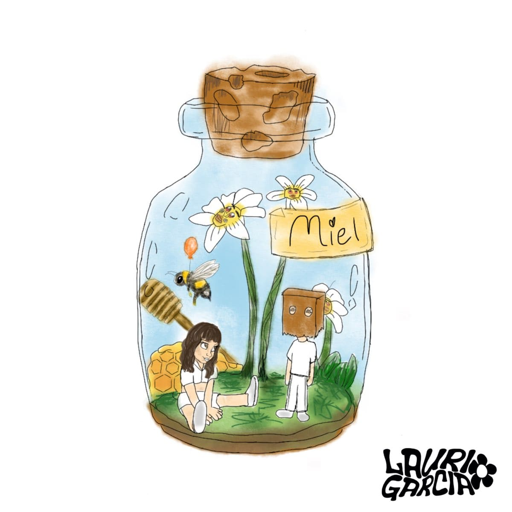
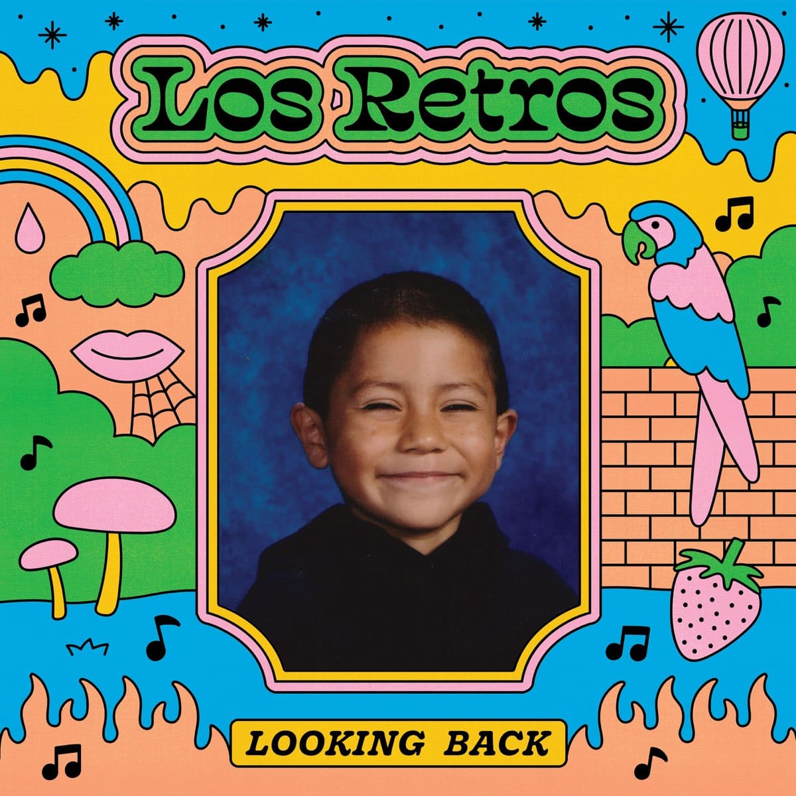
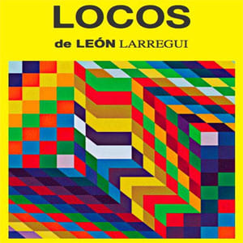
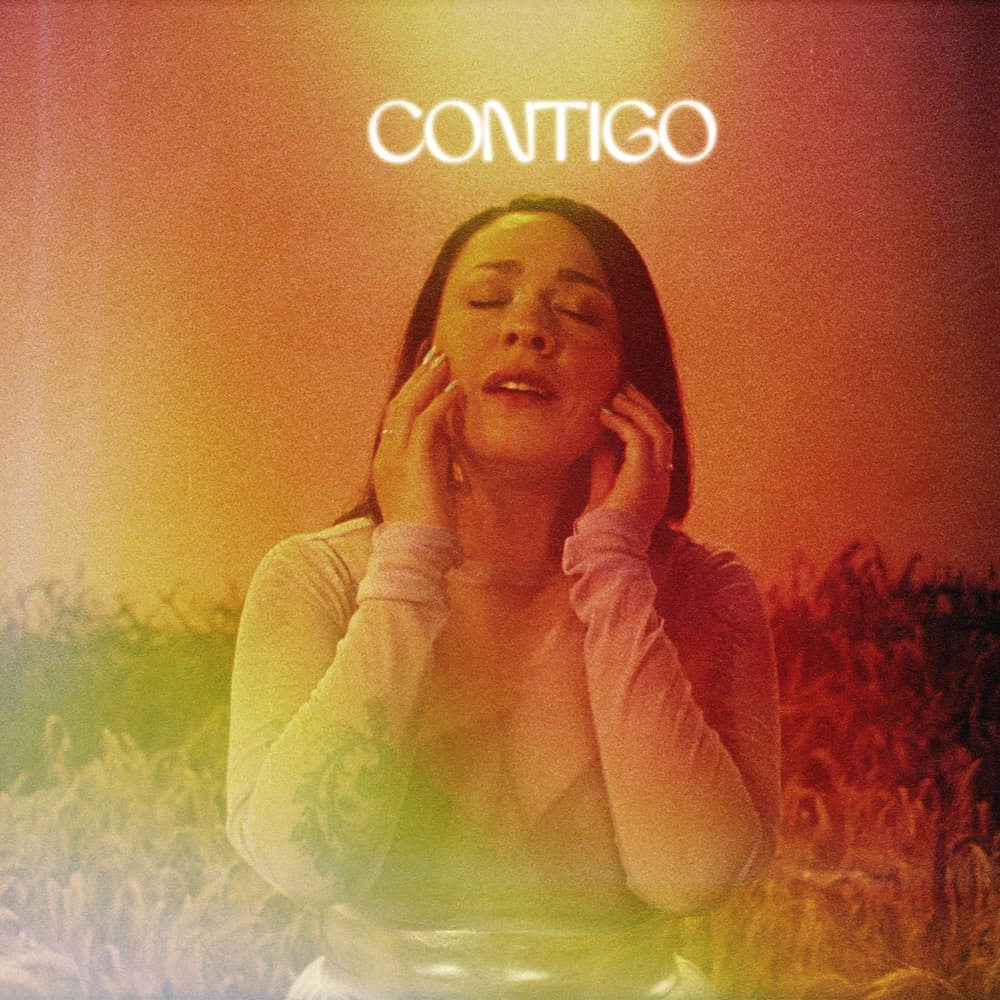
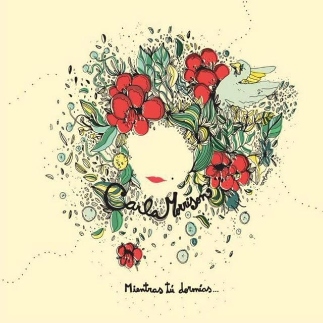
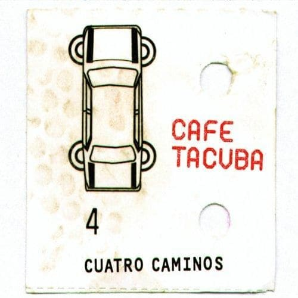
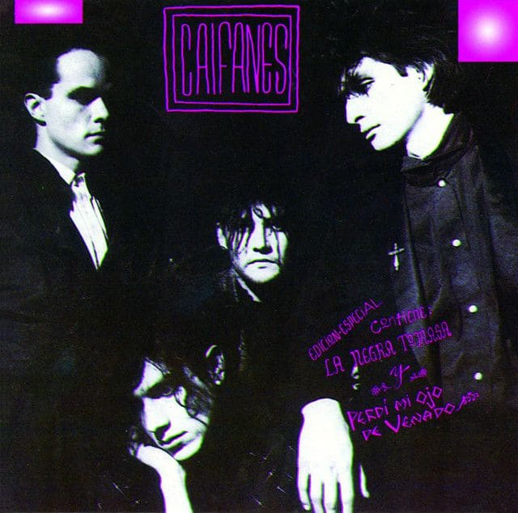
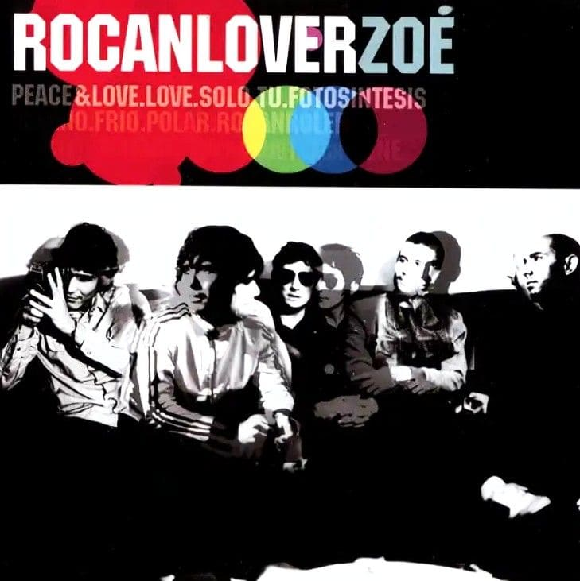

My One And Only Love
Mon Laferte

Química Mayor
Mon Laferte

Amor Completo
Mon Laferte

Miel
Lauri Garcia

Something about you
Eyedress

Lo Que Siento
Cuco

Amor De Siempre
Cuco

Amtrak
Los Retros

Labios Rotos
Zoé

Via Lactea
Zoé

Corazon Atomico
Zoé

Rue Vieille Du Temple
Leon Larregui

Locos
Leon Larregui

Contigo
Carla Morrison

Compartir
Carla Morrison

Buttercup
Jack Stauber

Dumb Heart
Jack Stauber

Enamorado Tuyo
Cuarteto de Nos

I Was Made For Lovin' You
Kiss

Eres
Café Tacvba

All My Loving
The Beatles

Entre Caníbales
Soda Stereo

Viento
Caifanes

Frances Limón
Enanitos Verdes

Luv(sic)
Nujabes

Tu si sabes quererme
Natalia Lafourcade

Amor De Mis Amores
Natalia Lafourcade

Soñé
Zoé

Arrullo De Estrellas
Zoé